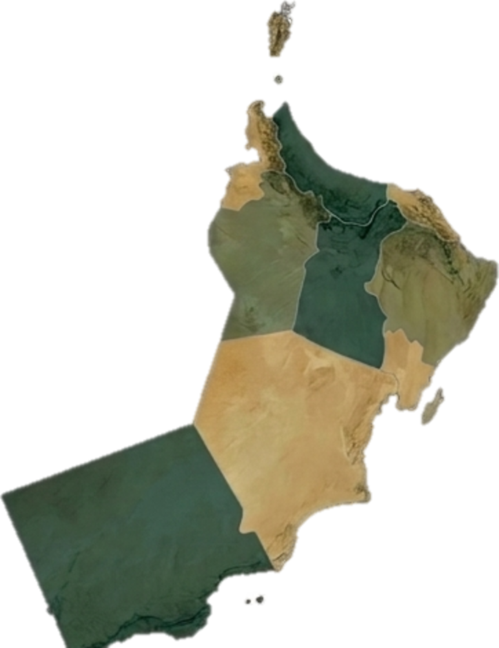

01
نستشرفالتحديات والفرص والحلول الذكية القادمة
ملتقى استراتيجي يجمع الإدارة العليا بقيادات المحافظات؛ لتحويل توجهات الخطة الاستراتيجية إلى مسارات عمل واضحة وموحّدة.
التحديات والفرص والحلول الذكية القادمة
أهداف الصندوق مع واقع وتطلعات المحافظات
حلولاً تقود التحول الرقمي والابتكار المؤسسي
أولويات ومبادرات والتزامات قابلة للمتابعة
الرئيس التنفيذي ونائبا الرئيس، ومدراء العموم والمسؤولون في المستوى القيادي
الوصول الشامل، وجاهزية المنظومة، وتنمية المجتمع
من أصوات الموظفين تتشكل حكاية الأثر
تظهر إجابات المشاركين كاملة هنا فور إرسالها.

ممارسات تنقل المعرفة إلى العمل، وتوسّع الوصول المجتمعي، وتعزز التكامل بين دوائر المحافظات وشركائها.
اختبار عملي للتنسيق وتكامل الأدوار تحت ضغط الوقت